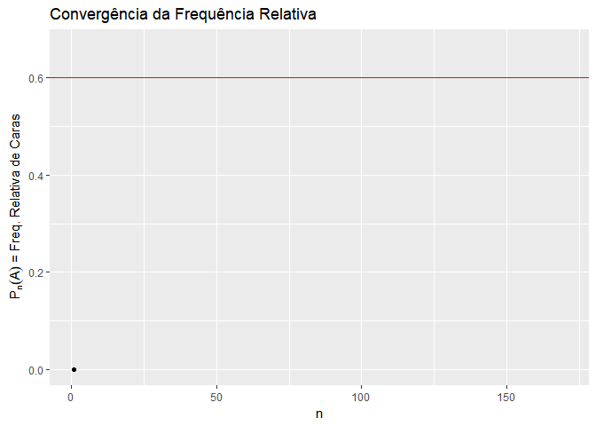
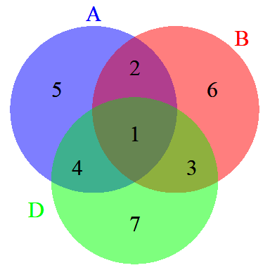

1 Probabilidade Subjetiva
A construção de probabilidade subjetiva apresentada aqui pode ser encontrada no livro Optimal Statistical Decisions (DeGroot 1970).
\(\Omega\): espaço amostral, conjunto não vazio.
\(\mathcal{A}\): \(\sigma\)-álgebra de subconjuntos de \(\Omega\), isto é,
- \(\Theta \in \mathcal{A}\);
- \(A \in \mathcal{A} \Longrightarrow A^{c} \in \mathcal{A}\);
- \(\displaystyle A_1, A_2, \ldots \in \mathcal{A} \Longrightarrow \bigcup_{i\geq1} A_i \in \mathcal{A}\).
Os elementos de \(\mathcal{A}\) são chamados de eventos e serão denotados por \(A, B, C, \ldots, A_1, A_2, \ldots\)
1.1 Definição Axiomática
- \(P: \mathcal{A} \longrightarrow [0,1]\) é uma medida de probabilidade se
- \(P(\Omega) = 1\);
- \(\displaystyle A_1, A_2, \ldots \in \mathcal{A}\) com \(A_i \bigcap A_j = \emptyset\) , \(\displaystyle P\left(\bigcup_{i \geq 1} A_i\right) = \sum_{i \geq 1} P\left(A_i\right)\).
1.2 Interpretações de Probabilidade
- Interpretação Clássica (De Moivre, Laplace)
- baseia-se na equiprobabilidade dos resultados;
- \(P(A) = \frac{|A|}{|\Omega|}\).
- Exemplo: um lançamento de moeda, \(A\) = “cara”, \(P(A) = \frac{1}{2}\).
\(~\)
- Interpretação Frequentista (Venn, von Mises, Reichenbach, etc.)
- quase unânime na primeira metade do século XX e ainda é a mais aceita;
- baseia-se na regularidade das frequências relativas (lei dos grandes números);
- \(P(A) = lim \frac{A_n}{n}\), onde \(A_n\) é o número de ocorrências de \(A\) em \(n\) realizações idênticas e independentes do experimento;
- Supõe que é possível repetir indefinidamente o experimento nas mesmas circustâncias.
- Exemplo: um lançamento de moeda, \(A\) = “cara”.

\(~\)
- Interpretação Lógica (Keynes, Jeffreys, Carnap, etc.)
- medida de “vínculo parcial” entre uma evidência e uma hipótese;
- baseia-se em relações objetivas entre proposições.
- Exemplo: considere duas proposições: “até agora todos os lançamentos resultaram em cara” e “será realizado um novo lançamento”. Pode-se afirmar que “provavelmente o resultado do novo lançamento será cara”.
\(~\)
- Interpretação Subjetivista (Ramsey, de Finetti, Savage, etc)
- probabilidade como medida subjetiva de crença;
- baseada na experiência de cada indivíduo, portanto única.
- Exemplo: suponha que Bruno lançou uma moeda 3 vezes e todos os resultados foram cara. Esse indivíduo, em posse dessa informação, pode acreditar que o resultado cara é mais provável que coroa. Contudo, quando pergunta sobre a probabilidade de cara ao seu colega Olavo, ignorante com relação a moeda, ele responde que é 1/2.
\(~\)
1.3 Relação de Crença \(\precsim\)
\(\precsim\) : relação de “crença” em \(\mathcal{A}\times\mathcal{A}\)
- \(A \prec B\) : acredito mais em \(B\) que em \(A\) (\(B \succ A\))
- \(A \sim B\) : acredito igualmente em \(B\) e \(A\)
- \(A \precsim B\) : acredito em \(B\) pelo menos tanto quanto em \(A\)
Objetivo: sob certas condições em \(\precsim\), obter uma medida de probabilidade \(P\) que representa (concorda) com \(\precsim\).
\[A \precsim B ~ \Longleftrightarrow ~ P(A) \leq P(B)\]
\(~\)
Suposições sobre \(\precsim\)
SP1: Para \(A, B \in \mathcal{A}\), exatamente uma das afirmações a seguir deve valer:
\[A \prec B ~,~ B \prec A ~\textrm{ou}~ A \sim B.\]
\(~\)
SP2: \(A_1, A_2, B_1, B_2 \in \mathcal{A}\) tais que \(A_1 \cap A_2 = B_1 \cap B_2 = \emptyset\) e \(A_i \precsim B_i\), \(i=1,2\). Então \[A_1 \cup A_2 \precsim B_1 \cup B_2 .\] Além disso, se \(A_i \prec B_i\) para algum \(i\), então \(A_1 \cup A_2 \prec B_1 \cup B_2 .\)
\(~\)
SP3: Se \(A\) é um evento, então \(\emptyset \precsim A\). Além disso, \(\emptyset \prec \Omega\).
\(~\)
SP4: Se \(A_1, A_2, \ldots\) uma sequência decrescente de eventos, isto é, \(A_n \supseteq A_{n+1}, \forall n\), e \(B\) tal que \(B \precsim A_n, \forall n\) então \[B \precsim \bigcap_{n \geq 1} A_n.\]
\(~\)
SP5: Existe uma variável aleatória \(X: \Omega \longrightarrow \mathbb{R}\), \(\mathcal{A}\)-mensurável, tal que \(X(\omega) \in [0,1], \forall \omega \in \Omega\) e, se \(I_1\) e \(I_2\) são intervalos contidos em \([0,1]\), \(\{X \in I_1\} \precsim \{X \in I_2\} \Leftrightarrow \lambda(I_1) \leq \lambda(I_2)~.\)
Se \(I=[a,b] \subseteq [0,1]\), \(\lambda(I) = b-a\) é o comprimento do intervalo \(I\) (medida de Lebesgue).
“Experimento auxiliar” ; \(X \sim\) Uniforme[0,1].
\(\{X \in [a,b]\}\) \(\sim \{X \in (a,b]\}\) \(\sim \{X \in [a,b)\}\) \(\sim \{X \in (a,b)\}\).
\(~\)
Lema 1: \(A, B, D \in \mathcal{A}\) tais que \(A \cap D = B \cap D = \emptyset\). Então \[A \precsim B ~\Leftrightarrow~ A \cup D \precsim B \cup D\]
Demo:
(\(\Rightarrow\)) \(A \precsim B \Rightarrow A \cup D \precsim B \cup D\) (SP2)
(\(\Leftarrow\)) \(B \prec A \Rightarrow B \cup D \prec A \cup D\) (SP2)
\(~\)
Teorema 1: Se \(A \precsim B\) e \(B \precsim D\) então \(A \precsim D\).
Demo:
 (i) \((1) \cup (2) \cup (4) \cup (5) \precsim (1) \cup (2) \cup (3) \cup (6)\) \(~\Rightarrow~ (4) \cup (5) \precsim (3) \cup (6)\).
(ii) Analogamente, \((2) \cup (6) \precsim (4) \cup (7)\)
De (i) e (ii) e pelo Lema 1, \((4) \cup (5) \cup (2) \cup (6) \precsim (3) \cup (6) \cup (4) \cup (7)\)
\(~\Rightarrow~ (2) \cup (5) \precsim (3) \cup (7)\) \({~\Rightarrow~ (2) \cup (5) \cup (1) \cup(4) \precsim (3) \cup (7) \cup (1) \cup(4)}\).
\(~\)
Teorema 2 (generalização do SP2): Se \(A_1, \ldots, A_n\) são eventos disjuntos e \(B_1, \ldots, B_n\) são também eventos disjuntos tais que \(A_i \precsim B_i\), para \(i=1,\ldots,n\), então \[\bigcup_{i=1}^{n} A_i \precsim \bigcup_{i=1}^{n} B_i.\] Se \(A_i \prec B_i\) para algum i, então \(\bigcup_{i=1}^{n} A_i \prec \bigcup_{i=1}^{n} B_i.\)
Demo: Exercício.
\(~\)
Teorema 3: Se \(A \precsim B\) então \(A^c \succsim B^c\).
Demo: Do Lema 1, \(A \cup (A^c \cap B^c) \precsim B \cup (A^c \cap B^c)\) \(\Rightarrow B^c \cup (A \cap B) \precsim A^c \cup (A \cap B)\) \(\Rightarrow B^c \precsim A^c\).
\(~\)
Resultado: Para todo evento \(A\), \(A \precsim \Omega\).
Demo: Por SP3, \(\emptyset \precsim A^c\). Tomando \(D=A\) no Lema 1, \(\emptyset \cup A \precsim A^c \cup A \Rightarrow A \precsim \Omega\).
\(~\)
Teorema 4: Se \(A \subseteq B\) então \(A \precsim B\).
Demo: Suponha, \(B \prec A\). Tomando \(D=B^c\) no Lema 1, \(B \cup B^c \prec A \cup B^c \Rightarrow \Omega \prec A \cup B^c\). Absurdo!
\(~\)
Exemplo 1: \(\omega_0 \in \Omega\). \(A \precsim B \Leftrightarrow \{\omega_0 \in B\) ou \(\omega_0 \notin (A \cup B)\}\). Mostre que \(\precsim\) obedece a SP1 a SP4.
(SP1)
\(A \precsim B \Leftrightarrow \omega_0 \in B \cup (A \cup B)^c\) \(\Rightarrow B \prec A \Leftrightarrow \omega_0 \in B^c \cap (A \cup B)\) \(\Leftrightarrow \omega_0 \in A \cap B^c.\)
Analogamente, \(A \prec B \Leftrightarrow \omega_0 \in B \cap A^c.\)
\(A \sim B \Leftrightarrow A \precsim B\) e \(B \precsim A\) \(\Leftrightarrow \omega_0 \in [B \cup (A \cup B)^c] \cap [A \cup (A \cup B)^c]\) \(\Leftrightarrow \omega_0 \in (A \cap B) \cup (A \cup B)^c.\)
\(~\)
(SP2)
\(A_i \precsim B_i , i=1,2 \Leftrightarrow\) \(\omega_0 \in [B_1 \cup (A_1 \cup B_1)^c] \cap [B_2 \cup (A_2 \cup B_2)^c]\) \(\Leftrightarrow \omega_0 \in [(B_1 \cup B_2) \cap D^c] \cup (A_1 \cup B_1 \cup A_2 \cup B_2)^c,\)
com \(D = (A_1 \cap B2) \cup (A_2 \cap B1).\)
\(A_1 \cup A_2 \precsim B_1 \cup B_2 \Leftrightarrow\) \(\omega_0 \in (B_1 \cup B_2) \cup (A_1 \cup A_2 \cup B_1 \cup B_2)^c\)
Como \((B_1 \cup B_2) \cap D^c \subseteq (B_1 \cup B_2)\), vale o SP2.
\(~\)
(SP3)
\(\emptyset \precsim A \Leftrightarrow \omega_0 \in A \cup (\emptyset \cup A)^c\) \(\Leftrightarrow \omega_0 \in A \cup A^c = \Omega.\)
Como \(\Omega\) é não-vazio, \(\exists \omega_0 \in \Omega\) e, portanto, \(\emptyset \prec \Omega\).
\(~\)
(SP4) Exercício!
\(~\)
Exemplo 2: \(\Omega = \mathbb{N}\), \(\mathcal{A} = \mathcal{P}(\mathbb{N})\). \(A \precsim B \Leftrightarrow \{B\) é infinito ou \(A\) e \(B\) são finitos com \(|A| \leq |B|\}\). Verifique se \(\precsim\) satisfaz SP1 a SP4.
\(~\)
Teorema 5: Se \(A_1 \subseteq A_2 \subseteq \ldots\) é uma sequência crescente de eventos e \(B\) é tal que \(A_n \precsim B, \forall n\) então \[\bigcup_{n \geq 1} A_n \precsim B.\]
Demo: \(A_n^c \supseteq A_{n+1}^c\) e, pelo Teo 3, \(A_n^c \succsim B^c\), \(\forall n\).
Por SP4, \(\bigcap_{n \geq 1} A_n^c \succsim B^c\) \(\Rightarrow \bigcup_{n \geq 1} A_n \precsim B.\)
\(~\)
Teorema 6: \(\left(A_n\right)_{n \geq 1}\) e \(\left(B_n\right)_{n \geq 1}\) sequências tais que \(A_i \cap A_j = B_k \cap B_l = \emptyset\), \(\forall i \neq j\), \(\forall k \neq l\). \[A_i \precsim B_i, \forall i ~\Rightarrow~ \bigcup_{n \geq 1} A_n \precsim \bigcup_{n \geq 1} B_n.\] Se existe ao menos um \(j\) tal que \(A_j \prec B_j\) então \(\displaystyle{ \bigcup_{n \geq 1} A_n \prec \bigcup_{n \geq 1} B_n }.\)
Demo: Da extensão de SP2, temos que \(\displaystyle{ \bigcup_{i = 1}^n A_i \precsim \bigcup_{i = 1}^n B_i }\), \(\forall n \geq 1\) \(~\Rightarrow~ \displaystyle{ \bigcup_{i = 1}^n A_i \precsim \bigcup_{i = 1}^{\infty} B_i }\), \(\forall n \geq 1\) \(~\Rightarrow~ \displaystyle{ \bigcup_{i = 1}^{\infty} A_i \precsim \bigcup_{i = 1}^{\infty} B_i }~\) (Teo 5)
\(\exists n_0\) tal que \(A_{n_0} \prec B_{n_0}\). De SP2, temos que, para \(n \geq n_0\),
\(\displaystyle \bigcup_{i = 1}^{n_0} A_i = \bigcup_{i = 1}^{n_0-1} A_i \cup A_{n_0} \prec \bigcup_{i = 1}^{n_0-1} B_i \cup B_{n_0} = \bigcup_{i = 1}^{n_0} B_i\) \(~\Rightarrow~ \displaystyle \bigcup_{i = 1}^{n_0} A_i \prec \bigcup_{i = 1}^{n_0} B_i.\)
Da primeira parte, temos que \(\displaystyle{ \bigcup_{i = n_0+1}^{\infty} A_i \precsim \bigcup_{i = n_0+1}^{\infty} B_i } ~\) e, por SP2,
\(\displaystyle \bigcup_{i = 1}^{n_0} A_i \cup \bigcup_{i = n_0+1}^{\infty} A_i \prec \bigcup_{i = 1}^{n_0} B_i \cup \bigcup_{i = n_0+1}^{\infty} B_i\)
provando o resultado.
\(~\)
1.4 Medida de Probabilidade que “representa” \(\precsim\)
Teorema 7: Seja \(A \in \mathcal{A}\). Então \(\exists! a^* \in [0,1]\) tal que \(A \sim \{X \in [0,a^*]\}\).
Demo: Seja \(U(A) = \left\{ a \in [0,1] : A \precsim \{X \in [0,a]\} \right\}\).
\(1 \in U(A)\) pois \(\Omega = \{X \in [0,1]\} \succsim A\) \(~\Rightarrow~ U(A) \neq \emptyset\).
Tome \(a^* = \inf U(A)\).
\(~\)
(i) Considere \((a_n)_{n \geq 1}\), \(a_n \in [0,1], \forall n \geq 1\), tal que \(a_n \geq a_{n+1} \geq a^*\) e \(a_n \downarrow a^*\). Então, \(\forall n \geq 1\) , \(\{X \in [0,a_n]\} \succsim A\).
Por SP4, \(\displaystyle \bigcap_{n=1}^\infty \{X \in [0,a_n]\} \succsim A\) \(~\Rightarrow~ \{X \in [0,a^*]\} \succsim A\)
\(~\)
(ii) Se \(a^*=0\) , \(\{X \in [0,0]\} \sim \emptyset \precsim A\) (por SP3).
Se \(a^* > 0\) , considere \((a_n)_{n \geq 1}\) com \(a_n \leq a_{n+1} < a^*\) e \(a_n \uparrow a^*\).
\(\{X \in [0,a_n]\} \precsim A, \forall n \geq 1\) e, pelo Teo 5, \(\displaystyle \bigcup_{n=1}^{\infty} \{X \in [0,a_n]\} \precsim A\) \(~\Rightarrow~ \{X \in [0,a^*)\} \sim \{X \in [0,a^*]\} \precsim A\).
\(~\)
De (i) e (ii), temos que \(A \sim \{X \in [0,a^*]\}\).
\(~\)
\(a^*\) é único pois se \(a_1 < a^* < a_2\) são outros valores quaisquer, segue que \(\{X \in [0,a_1]\} \prec \{X \in [0,a^*]\} \prec \{X \in [0,a_2]\}\) e só um desses eventos pode ser equivalente à \(A\).
\(~\)
Teorema 8: A probabilidade do evento \(A\), \(P(A)\), é definida como \(a^* \in [0,1]\) tal que \(A \sim \{X \in [0,a^*]\}\). Assim, \(A \sim \left\{X \in \left[0,P(A)\right]\right\}\). A função de probabilidade assim definida satisfaz: \[A \precsim B ~\Leftrightarrow~ P(A) \leq P(B).\]
Demo: Do Teo 7, \(A \sim \left\{X \in \left[0,P(A)\right]\right\}\) e \(B \sim \left\{X \in \left[0,P(B)\right]\right\}\).
\(A \precsim B\) \(~\Leftrightarrow~ \left\{X \in \left[0,P(A)\right]\right\} \precsim \left\{X \in \left[0,P(B)\right]\right\}\) \(~\Leftrightarrow~ \lambda \left([0,P(A)]\right) \precsim \lambda \left([0,P(B)]\right)\) \(~\Leftrightarrow~ P(A) \leq P(B).\)
\(~\)
Teorema 9: A função \(P: \mathcal{A} \longrightarrow [0,1]\) que, para cada \(A \in \mathcal{A}\), associa \(P(A)\) tal que \(A \sim \left\{X \in \left[0,P(A)\right]\right\}\) é uma medida de probabilidade (no sentido \(\sigma\)-aditiva).
Demo: (i) \(P(A) \geq 0\).
\(\Omega \sim \{X \in [0,1]\}\Rightarrow P(\Omega)=1\).
\(\emptyset \sim \{X \in [0,0]\} \Rightarrow P(\emptyset)=0\)
\(\emptyset \precsim A \Rightarrow 0 \leq P(A)\).
\(~\)
(ii) Seja \(A\) e \(B\) tal que \(A \cap B = \emptyset\). Vamos mostrar que \(P(A \cup B) = P(A) + P(B)\).
Pelo Teo 8, \(A \sim \{ X \in [0,P(A)]\}\), \(B \sim \{ X \in [0,P(B)]\}\), \(A \cup B \sim \{ X \in [0,P(A \cup B)]\}\).
Como \(A \subseteq A \cup B\) e, por SP3, \(A \precsim A \cup B\), vale que \(P(A) \leq P(A \cup B)\). Vamos verificar que \(B \sim \left\{X \in \left(P(A),P(A \cup B) \right]\right\}\).
Suponha, por absurdo, \(B \prec \left\{X \in \left(P(A),P(A \cup B) \right]\right\}\).
\(A \precsim \{X \in [0,P(A)]\}\) \(~\overset{SP2}{\Longrightarrow}~\) \(A \cup B \prec \{X \in [0,P(A)]\} \cup \left\{X \in \left(P(A),P(A \cup B) \right]\right\}\) \(~\Rightarrow~ A \cup B \prec \left\{X \in [0,P(A)] \cup \left(P(A),P(A \cup B) \right]\right\}\) \(~\Rightarrow~ A \cup B \prec \left\{X \in \left[0,P(A \cup B) \right]\right\}\) ~ (Absurdo!)
Analogamente, \(B \succ \left\{X \in \left(P(A),P(A \cup B) \right]\right\}\) é absurdo! Logo, \(B \sim \left\{X \in \left(P(A),P(A \cup B) \right]\right\} \sim \left\{X \in \left[0, P(A \cup B)-P(A) \right]\right\}\).
Como \(B \sim \left\{X \in \left[0,P(B)\right]\right\}\), temos que \(P(A \cup B) = P(A) + P(B)\).
\(~\)
Corolário 1: Se \(A_1, \ldots, A_n\) são eventos disjuntos, então \(P\left(\bigcup_{i=1}^{n} A_i\right) = \sum_{i=1}^{n} P\left(A_i\right)\).
Demo: Indução.
\(~\)
Teorema 10: Seja \(A_1 \supseteq A_2 \supseteq \ldots\) uma seq. decrescente de eventos tais que \(\bigcap_{i=1}^{n} A_i = \emptyset\). Então \(\displaystyle \lim_{n \uparrow \infty} P(A_n) = 0\).
Demo: \(A_1 \supseteq A_2 \supseteq \ldots\) \(\Rightarrow\) \(P(A_1) \geq P(A)_2 \geq \ldots\).
Além disso, \(\displaystyle \lim_{n \uparrow \infty} P(A_n) = b\). Como \(P(A_n) \geq b\), \(\forall n\), segue que \(A_n \succsim \{X \in [0,b]\}\), \(\forall n\).
Por SP4, \(\emptyset = \bigcap_{i=n}^{\infty} A_i \succsim \{X \in [0,b]\}\).
Se \(b>0\), então \(\{X \in [0,b]\} \succ \{X \in [0,b/2]\} \succsim \emptyset\). Como essa relação contradiz a anterior, temos que \(b\) deve ser igual a \(0\).
\(~\)
Exercício 1: Use o Corolário 1 e o Teorema 10 para conculuir a demonstração do Teorema 9, mostrando que \(P\) é \(\sigma\)-aditiva, isto é, \[P\left(\bigcup_{i=1}^{\infty} A_i\right) = \sum_{i=1}^{\infty} P\left(A_i\right) ~,~~ A_i \cap A_j = \emptyset, \forall i \neq j.\]
Solução: Seja \((A_n)_{n \geq 1}\) sequência de eventos disjuntos. Segue do Corolário 1 que
(i) \(\displaystyle P\left(\bigcup_{i=1}^{\infty} A_n\right) = \sum_{i=1}^{n} P\left(A_i\right) + P\left(\bigcup_{j=n+1}^{\infty} A_j\right)\), \(n=1,2,\ldots\)
Considere \(\displaystyle B_n=\bigcup_{j=n+1}^{\infty} A_j\), \(n \geq 1\), uma sequência decrescente de eventos tais que \(\displaystyle \bigcap_{n=1}^{\infty} B_n = \emptyset\). Pelo Teorema 10, segue que \(\displaystyle \lim_{n\uparrow \infty} B_n = 0\). Assim, tomando o limite do lado direito de (i), segue que
\(\displaystyle P\left(\bigcup_{i=1}^{\infty} A_n\right)\) \(=\displaystyle \lim_{n\uparrow \infty} \sum_{i=1}^{n} P\left(A_i\right) + \lim_{n\uparrow \infty} P\left(B_n\right)\) \(=\displaystyle \sum_{i=1}^{\infty} P\left(A_i\right)\).
\(~\)
Teorema 11: Se a relação de crença \(\precsim\) obedece SP1 a SP5 então \(\exists !~ P: \mathcal{A} \rightarrow [0,1]\), medida de probabilidade, tal que \(P\) representa \(\precsim\).
Demo: Exercício!
\(~\)
1.5 Medida de Probabilidade Condicional
Nova Relação: \((A|D) \precsim (B|D)\) (Sabendo que \(D\) ocorreu, \(B\) é preferível a \(A\)).
Para \(D = \Omega\), temos o caso anterior: \(A \precsim B\) \(\Leftrightarrow (A|\Omega) \precsim (B|\Omega)\).
Suponha que vale as suposições SP1 a SP5 e, adicionalmente,
SP6: \((A|D) \precsim (B|D) \Leftrightarrow (A \cap D) \precsim (B \cap D)\) \(~~\Big( (A \cap D|\Omega) \precsim (B \cap D|\Omega) \Big)\)
Teorema 12: \(\forall A, B, D \in \mathcal{A}\), considere \(\precsim\) satisfazendo SP1 a SP6. Então \(P: \mathcal{A} \rightarrow [0,1]\) de modo que para cada \(A \in \mathcal{A}\) é associada \(P(A) \in [0,1]\) tal que \(A \sim \left\{X \in \left[0,P(A)\right]\right\}\) é uma medida de probabilidade que representa \(\precsim\), isto é, \[(A|\Omega) \precsim (B|\Omega) \Leftrightarrow P(A) \leq P(B).\] Além disso, se \(D \in \mathcal{A}\) é tal que \(P(D) \geq 0\), então \[(A|D) \precsim (B|D) \Leftrightarrow P(A|D) \leq P(B|D),\] onde \(P(\cdot|D): \mathcal{A} \rightarrow [0,1]\) é uma medida de probabilidade tal que \[P(A|D) = \frac{P(A \cap D)}{P(D)}.\]
Referências
DeGroot, M. H. 1970. Optimal Statistical Decisions. New York: MacGraw-Hill.